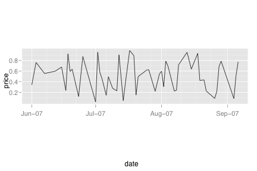
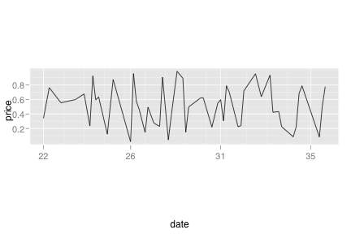
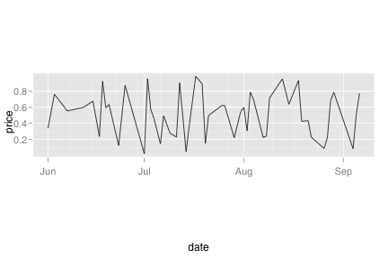
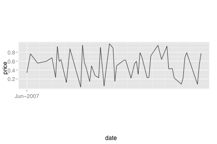
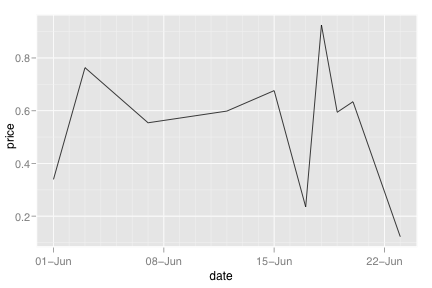
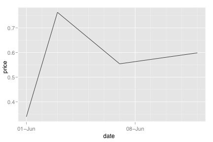
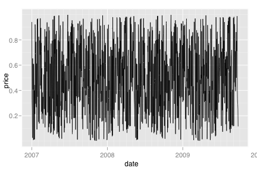

scale_date
Continuous scale for date variables
Details
See also
Examples
> df <- data.frame(= seq(Sys.Date(), len=100, by="1 day")[sample(100, 50)],= runif(50)) > df <- df[order(df$date), ] > dt <- qplot(date, price, data=df, geom="line") > dt$aspect.ratio <- 1/4 > > # We can control the format of the labels, and the frequency of > # the major and minor tickmarks. See ?format.Date and ?seq.Date > # for more details. > dt + scale_x_date()  > dt + scale_x_date(format="%m/%d") > dt + scale_x_date(format="%W")  > dt + scale_x_date(major="months", minor="weeks", format="%b")  > dt + scale_x_date(major="months", minor="2 days", format="%b") > dt + scale_x_date(major="years", format="%b-%Y")  > > # The date scale will attempt to pick sensible defaults for > # major and minor tick marks > qplot(date, price, data=df[1:10,], geom="line") + scale_x_date()  > qplot(date, price, data=df[1:4,], geom="line") + scale_x_date()  > > df <- data.frame(= seq(Sys.Date(), len=1000, by="1 day"),= runif(500)) > qplot(date, price, data=df, geom="line") + scale_x_date() 